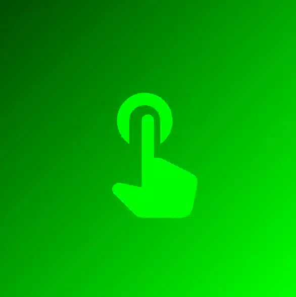

Bağımsız oyun ve sunucu stüdyosu
Minecraft sunucuları işletiyor, kendi oyunlarımızı geliştiriyoruz.
Turbolu Studios; Java ve Bedrock Edition sunucuları çalıştıran, aynı zamanda mobil oyun geliştiren küçük bir ekip. Sunucularımız kesintisiz, topluluğumuz aktif.
Java Edition · serbest dünya
turbolumc.aternos.me
Panele git
Sunucuya katılmak için adrese tıkla, kopyala ve oyuna yapıştır.
Projeler
Şu an üzerinde çalıştığımız ürünler
TurboluMC
Java Edition sunucumuz. Market, duyurular, kampanyalar ve oyuncu paneli.
Turbolu Bedrock
Telefon, tablet ve konsoldan katılabilen cross-play destekli Bedrock sunucumuz.

Turbolu Tıkla!
Android için geliştirdiğimiz bağımlılık yapan tıklama oyunu. Ücretsiz.
Yeni proje
Şu an geliştirme aşamasında. Yakında duyuracağız.
Duyurular
Sunucularımızdan son haberler
Yükleniyor…
Hakkımızda
Turbolu Studios, Minecraft sunucuları ve mobil oyunlar üzerine çalışan bağımsız bir stüdyodur. Sunucularımızı kendi altyapımızda işletiyor, oyunlarımızı sıfırdan geliştiriyoruz.
Amacımız hileye kapalı, lag olmayan ve topluluğun kendini rahat hissettiği ortamlar kurmak. Geri bildirimlerin tamamı değerlendirilir.
- 2
- Minecraft sunucusu
- 1
- Mobil oyun
- 7/24
- Aktif topluluk
- 0 ₺
- Sunucu erişim ücreti
İletişim
Soru, öneri ve şikayetlerin için